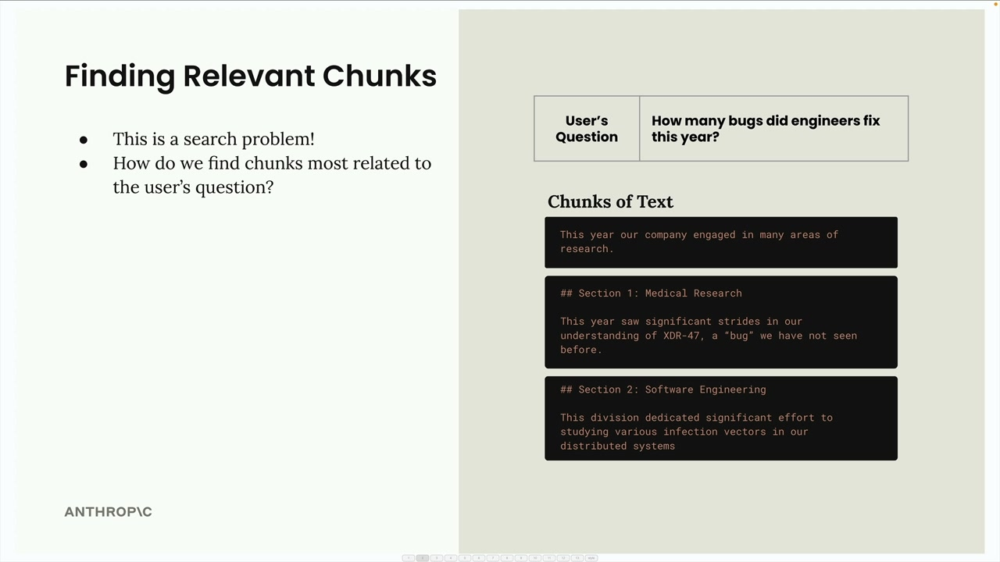
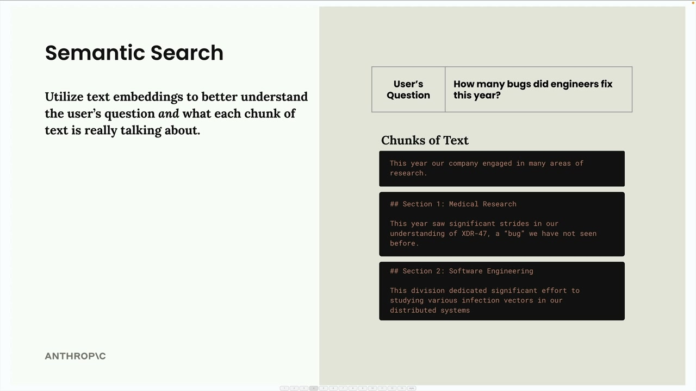
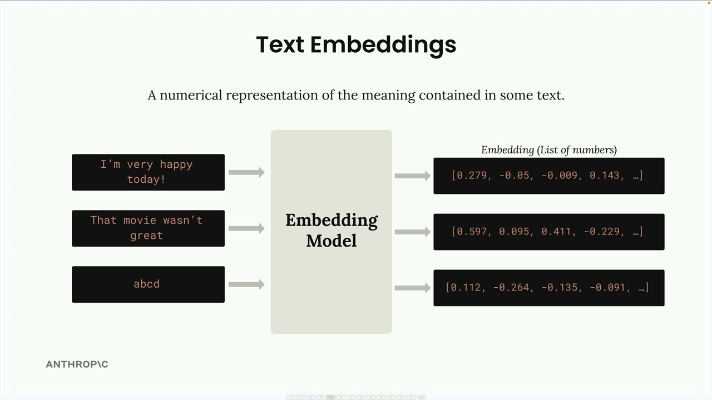
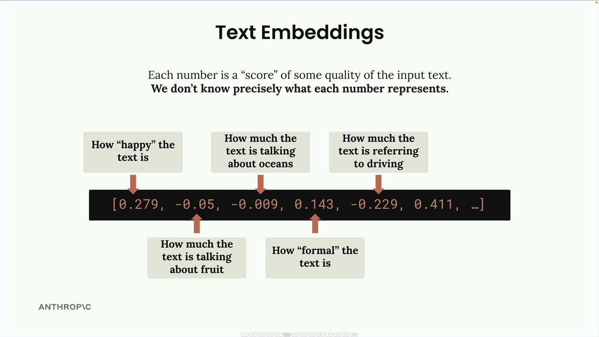
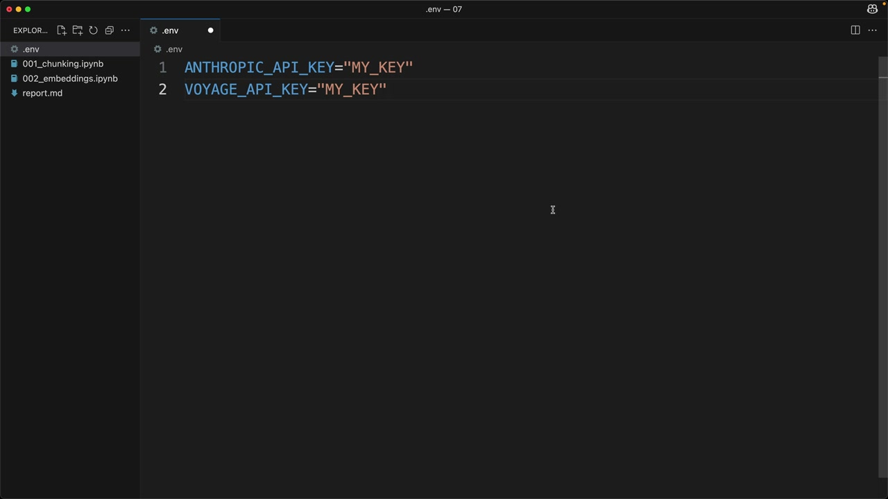
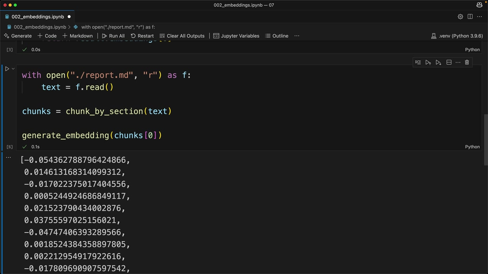
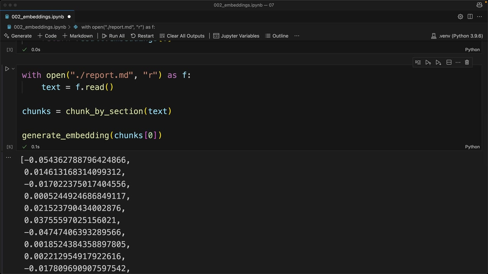

Эмбеддинги текста
Чему научитесь
Видео 4:02 и текст урока
К концу урока вы сможете:
- объяснить, что такое семантический поиск и эмбеддинг;
- получить API-ключ Voyage AI и подключить его;
- написать функцию
generate_embedding.
Видео и текст урока.
Смотреть урок на Skilljar Text embeddings · 4:02После разбиения документа на фрагменты следующий шаг конвейера RAG — найти фрагменты, которые подходят к вопросу пользователя. По сути, это задача поиска: нужно просмотреть все фрагменты и определить те, что связаны с вопросом.

Семантический поиск
Самый распространённый способ найти подходящие фрагменты — семантический поиск. В отличие от поиска по ключевым словам, который ищет точные совпадения слов, семантический поиск использует эмбеддинги текста, чтобы понять смысл и контекст и вопроса, и каждого фрагмента.

Эмбеддинги текста
Эмбеддинг текста — числовое представление смысла, заключённого в тексте. Можно думать о нём как о переводе слов и предложений в форму, с которой компьютер может работать математически.

Процесс такой:
- текст подаётся на вход модели эмбеддингов;
- модель выдаёт длинный список чисел — эмбеддинг;
- каждое число лежит в диапазоне от −1 до +1;
- эти числа отражают разные свойства или признаки входного текста.
Что означают числа
Каждое число в эмбеддинге — по сути «оценка» какого-то свойства текста. Но есть важная оговорка: мы не знаем точно, что означает каждое число.

Полезно представлять, что одно число означает «насколько текст радостный», а другое — «насколько он про океаны», но это лишь условные примеры. Настоящий смысл каждого измерения модель выучивает при обучении, и человек не может его напрямую интерпретировать.
VoyageAI для эмбеддингов
Anthropic сейчас не предоставляет генерацию эмбеддингов, поэтому рекомендуемый провайдер — VoyageAI. Нужно:
- зарегистрировать отдельный аккаунт VoyageAI;
- получить API-ключ (начать можно бесплатно);
- добавить ключ в переменные окружения.

.env с двумя ключами: ANTHROPIC_API_KEY и VOYAGE_API_KEY.В файл .env добавьте:
VOYAGE_API_KEY="your_key_here"
Реализация
Сначала установите библиотеку VoyageAI:
%pip install voyageai
Затем настройте клиент и напишите функцию генерации эмбеддингов:
from dotenv import load_dotenv
import voyageai
load_dotenv()
client = voyageai.Client()
def generate_embedding(text, model="voyage-3-large", input_type="query"):
result = client.embed([text], model=model, input_type=input_type)
return result.embeddings[0]

report.md разбит по разделам, у первого фрагмента эмбеддинг начинается с −0.054, 0.015…Если запустить функцию на фрагменте текста, она вернёт список чисел с плавающей точкой — эмбеддинг. Процесс быстрый и простой; настоящая сложность — понять, как эффективно использовать эмбеддинги в конвейере RAG для поиска самого подходящего содержимого.

Следующий шаг — научиться сравнивать эмбеддинги, чтобы определять, какие фрагменты больше всего похожи на вопрос пользователя. Это и есть основа семантического поиска.
Дальше
Следующий урок собирает весь поток RAG целиком и объясняет косинусное сходство.
Оригинал урока: Text embeddings.